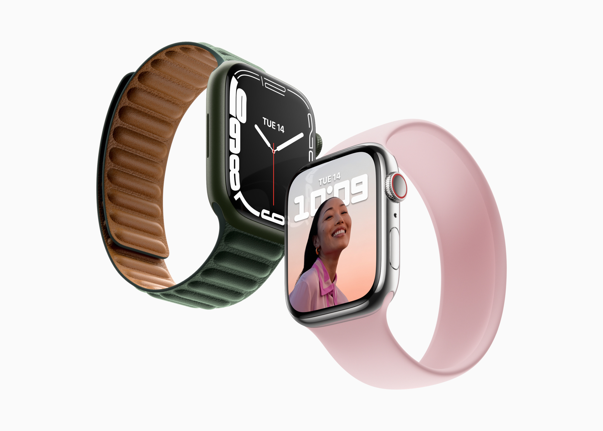
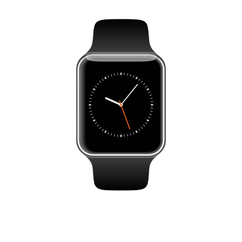

Introducing the future at your fingertips – a marvel of innovation and design that's poised to transform the way you experience technology. Welcome to the next evolution of tech.
Introducing the new and advanced I-watch ultra This is an upgrade from the I-watch which was introduced in early 2022. The I-watch ultra comes with a super amoled display and a battery life of 3000mah. It comes in different designs. This is the beginning of a new era of smartwatches.
Everybody loves tech gadgets. But ours is different. Here is how it works.
It is uncomplicated, it also has an easy setup.
Connecting your I-watch to your device has been made easier. Make sure your I-watch is fully charged, power it on then install the I-watch Companion App. Connect to your device through Bluetooth by navigating to Settings or Bluetooth on you I-watch then select pair new devices. It's as easy as that.
If you want to connect your I-watch to other devices like headphones or speakers, follow a similar pairing process as with yoour smartphone. Put the secondary Bluetooth device (e.g. headphones) in pairing mode. In your I-watch Bluetooth settings tap"Pair New Device". Your secondary device would appear on the list of available devices. Tap on it to initiate pairing process.
After all this stages your I-watch would be successfully connect to your device. You can now customize your smartwatch with various features such as health tracking, GPS tracking, video calls, digital wallet application and entertainment options to your liking. "Enjoy every moment with your I-watch".
The I-watch is a smartwatch with great benefits when you make good use of it. Here are its benefits
The I-watch can provide turn-by-turn directions and navigation assistance when paired with a compatible phone. This functionality allows you to track your outdoor activities with high precision. This function helps in steps tracking as well.
The I-watch can continuously monitor your heart rate throughout the day and night. The watch can notify you if its detects abnormal heart rates, such as high or low heart rates. This feature can help you seek timely medical attention if needed.
When you use your I-watch for various tasks like unlocking your PC or confirming account sign-ins, it can serve as a second factor for two-factor authenication (2FA), enhancing the security of your online accounts.
The watch is highly portable, allowing you to have quick access to information and tools wherever you go. This can be valuable when you're out and about and inspiration strikes.
There are several finance tracking apps available on the I-watch which allows you to monitor your spending, categorize expenses and track bil payment history. By staying organized, you can identify areas where you can cut costs and save money
The I-watch is product developed by TECHLAND, a company known for its commitment to product quality and reliability. It undergoes rigorous testing to ensure it meets industry standards and performs consistently.